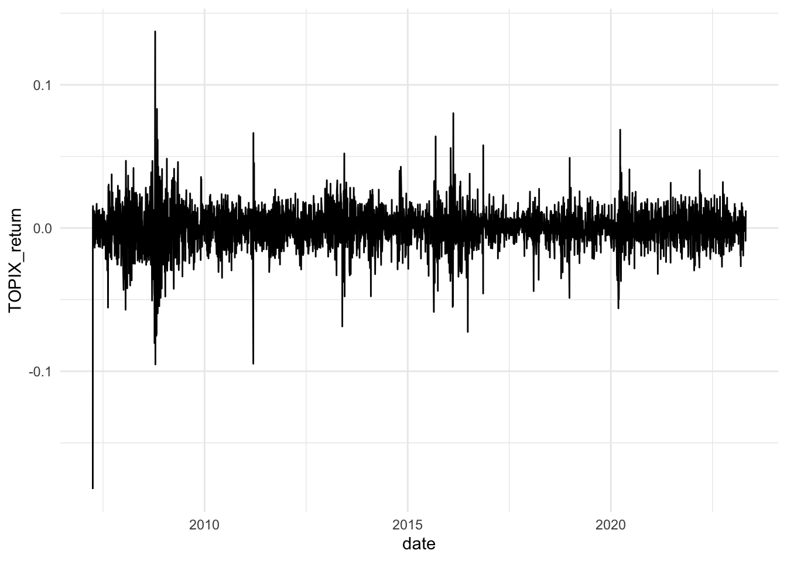
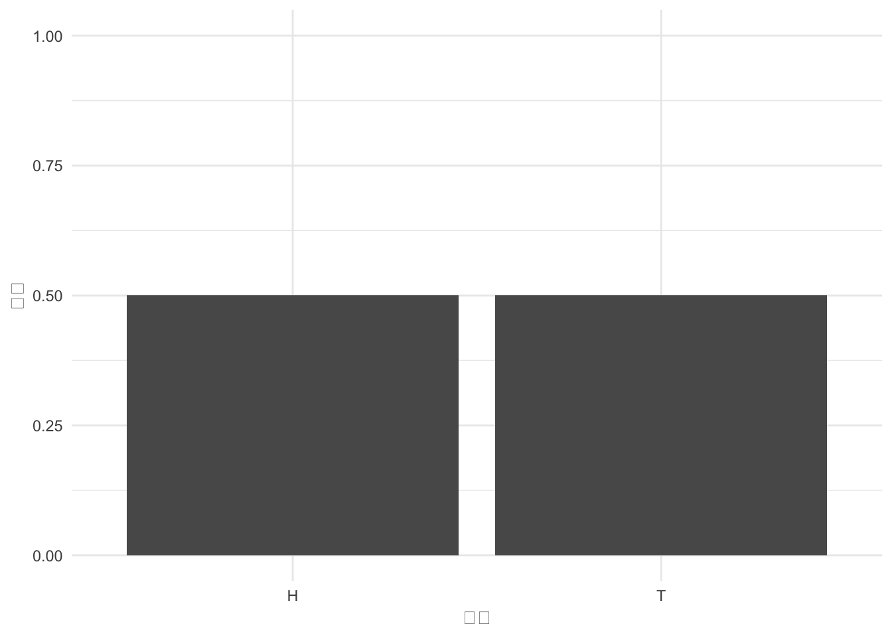
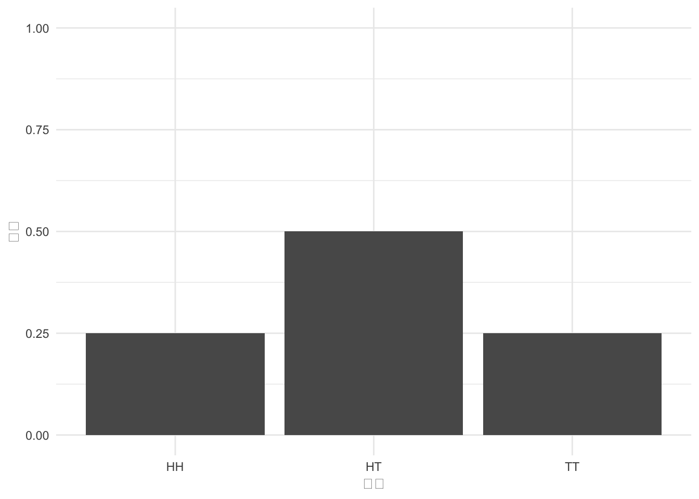

pacman::p_load(tidyverse, ggthemes, patchwork)2 確率
東証株価指数(Tokyo Stock Price Index: TOPIX)の値動きから何を感じますか？ 以下では、TOPIXの動きを通して確率について学びます。
まずは、Rの環境を整えましょう。 いくつかのパッケージを読み込み，グラフ作成時のスタイルを設定しておきます。
次にTOPIXのデータを読み込みんで、TOPIXの動きを確認します。 ここで読み込んでいるstock_data.csvには，2007年4月2日から2023年4月28日にわたる，TOPIX，トヨタ自動車，日産自動車，本田技術研究所の株価の終値が日次で記録されています。
df <- read_csv("data/stock_data.csv")ここで，TOPIXとは，東京証券取引所一部上場株式銘柄を対象として東京証券取引所が1秒ごとに算出・公表している株式ポートフォリオ(東証一部の時価総額)を株価指数で表したものです。 他の株価指数として有名なものに日経株価平均があります。 TOPIXの値動きを確認してみましょう。
ggplot(df) + aes(x = date, y = TOPIX) + geom_line()2008年のリーマンショックで暴落した株価も2014年からはじまったアベノミクスで株価は上昇し，2016年のマイナス金利，2020年の新型コロナウイルスの感染拡大による株価の下落など，TOPIXの値動きは経済の動向を反映していることが分かります。
2.1 期待値と分散(標準偏差)の推定
ファイナンスの分野では，資産価値(たとえば株価)それ自体より，資産価値の変化率(これをリターンといいます)で議論することも多いです。 先のTOPIXのデータを使って，TOPIXのリターンを計算して作図してみましょう。 まずリターン(return)の定義を確認します。
リターン
資産iのt期のリターンr_{i,t}は，
\begin{aligned} r_{i,t} &= \frac{D_{i,t} + (P_{i,t} - P_{i,t-1})}{P_{i,t-1}} \\ %&= \frac{D_{i,t}}{P_{i,t-1}} + \frac{P_{i,t} - P_{i,t-1}}{P_{i,t-1}}\\ &= \frac{D_{i,t} - P_{i,t}}{P_{i,t-1}} -1 \end{aligned}
ここで
- Dはインカム(配当，クーポン，地代など)
- Pは資産価値(株価，債券価格，地価など)
- iは企業，tは期を表す。
配当を受け取った場合，配当落ち日次リターンを計算することになります。上の式から配当Dを引いて計算します。
配当落ち日次リターン
株式iのt期における(配当落ち)日次リターンr_{i,t}は，
\begin{aligned} r_{i,t} = \frac{P_{i,t} - P_{i,t-1}}{P_{i,t-1}} = \frac{P_{i,t}}{P_{i,t-1}} - 1 \end{aligned}
株式の日次リターンを上の式に従って計算する場合，インカムゲインは考慮されていないことに留意しましょう。
同様に，TOPIXの(配当落ち)リターンr^{TOPIX}_{i,t}は
\begin{aligned} r^{TOPIX}_{i,t} = \frac{p_{i,t}}{p_{i,t-1}} - 1 \end{aligned}
となります。具体的には、次のような表になります。
# リターンの計算
df <- df %>%
mutate(
TOPIX_return = TOPIX / lag(TOPIX) - 1 # TOPIXのリターン
)
# 作表
df %>%
select(date, TOPIX, TOPIX_return) %>%
head(10) %>%
knitr::kable(digits = 3, booktabs = TRUE)| date | TOPIX | TOPIX_return |
|---|---|---|
| 2007-04-02 | 1682.49 | NA |
| 2007-04-03 | 1704.32 | 0.013 |
| 2007-04-04 | 1730.52 | 0.015 |
| 2007-04-05 | 1720.72 | -0.006 |
| 2007-04-06 | 1717.08 | -0.002 |
| 2007-04-09 | 1738.10 | 0.012 |
| 2007-04-10 | 1735.69 | -0.001 |
| 2007-04-11 | 1739.01 | 0.002 |
| 2007-04-12 | 1726.18 | -0.007 |
| 2007-04-13 | 1705.50 | -0.012 |
このTOPIX_returnを折れ線グラフにすると以下のようになります。
ggplot(df) + aes(x = date, y = TOPIX_return) + geom_line()
2.2 確率変数
これまでの観測データの値から，TOPIX，とりわけTOPIXのリターンはランダムな(確率的な)値をとっていることが分かります。 つまり予測不可能なデータということです。 TOPIXの長期的な傾向(Trend)はある程度予想することは可能ですが，明日明後日のTOPIXの値といった短期的な動向を予測することはほぼ不可能です。 つまり，TOPIXやTOPIXのリターンは，ある定まった値というよりも，不確実な値をとる変数であると考えることができます。 このような変数を確率変数(random variables)とよびます。
確率変数
ある試行(trial)によって起こりうる事象\omegaに対して，ある実数値x = X(\omega)が与えられ，それぞれの値が起こりうる確率密度関数p(x)が与えられる場合，\omegaからxへの関数X:\omega \mapsto xを確率変数(random variable)とよびます。 確率変数という名前がついていますが，実は関数なのです。
例：コイン投げ
1枚のコインを投げるという試行から起こりうる事象を\boldsymbol{H}と\boldsymbol{T}で表わします。
- 試行(trial)：コイン投げ
- 起こりうる結果(事象)：\omega =\boldsymbol{H}, \boldsymbol{T}の2つの事象が起こりうる。
- 試行の結果：\boldsymbol{H}の数x = \{X(\boldsymbol{H}), X(\boldsymbol{T}) \} = \{ 1,0 \}
- 各結果が起こる確率：p(1) = p(0) = 0.5
実現した\boldsymbol{H}の数(つまり表が出た回数)をxとするとき，事象\omegaからxへの関数X(コイン投げによる表の数)は確率変数である。
厳密な表現は分かりにくいですね…。 直感的には，確率を持った変数として理解してください。 でも，しばらく厳密にいきましょう！
\begin{tikzpicture}
\draw (0,1) node [left]{$X$};
\draw (0,3) node {before coin toss};
\draw (4,3) node {after coin toss};
\draw [thick, ->] (0,1) -- (4,2) node[pos=0.5, sloped, above]{$p(1)=0.5$};
\draw (4,2) node [right] {$\omega = \boldsymbol{H}, x=1$};
\draw [thick, ->] (0,1) -- (4,0) node[pos=0.5, sloped, below]{$p(0)=0.5$};
\draw (4,0) node [right] {$\omega = \boldsymbol{T}, x=0$};
\end{tikzpicture}確率は対応する値がどのくらいの割合で発生するかを表します。
df <- data.frame(
coin <- c("H", "T"),
p <- c(0.5, 0.5)
)
g <- ggplot(df) + aes(x = coin, y = p) + geom_col()
g <- g + ylim(0,1) + xlab("確率") + ylab("結果")
print(g)
2枚コイン投げの例
- 試行 (trial) : コイン投げ
- 起こりうる事象 : $= { (H,H),(H,T),(T,H),(T,T)} $
- 試行結果 : 表の数 x = \{ X(H,H),X(H,T),X(T,H),X(T,T)\} = \{2,1,0\}
- 各結果が起こる確率 : p(2) = 0.25，p(1) = 0.25 ，p(0) = 0.25
表の数をxとするとき，\omegaからxへの関数X:\omega \mapsto x(2枚のコイン投げによる表の数)は確率変数です。
\begin{tikzpicture}
\draw (0,2) node [left]{$X$};
\draw (0,5) node {before coin toss};
\draw (4,5) node {after coin toss};
\draw [thick, ->] (0,2) -- (4,4) node[pos=0.5, sloped, above]{$p(2)=0.25$};
\draw (4,4) node [right] {$\omega = (\boldsymbol{H},\boldsymbol{H}), x=2$};
\draw [thick, ->] (0,2) -- (4,2) node[pos=0.5, above]{$p(1)=0.5$};
\draw (4,2) node [right] {$\omega = (\boldsymbol{H},\boldsymbol{T}), x=1$};
\draw [thick, ->] (0,2) -- (4,0) node[pos=0.5, sloped, below]{$p(0)=0.25$};
\draw (4,0) node [right] {$\omega = (\boldsymbol{T},\boldsymbol{T}), x=0$};
\end{tikzpicture}df <- data.frame(
coin <- c("HH", "HT","TT"),
p <- c(0.25, 0.5,0.25)
)
g <- ggplot(df) + aes(x = coin, y = p) + geom_col()
g <- g + ylim(0,1) + xlab("確率") + ylab("結果")
print(g)
先の例と同様に、各確率の対応する値がどれくらいの割合で発生するかを表しています。 この確率分布は確率変数の特徴を表しています。
練習問題
コインを4枚投げたときに出た表の数をxで表すとします。 このとき，以下の(1)〜(4)について答えなさい。
- 起こりうる事象
- 試行結果
- 各結果が起こる確率
- 確率分布
確率変数により，われわれは不確実性を伴う現象を記述できるようになりました。 確率変数という用語は，結果を観測する前の状況を指し示しています。 まとめると、
- これからどうなるかを表しているのが確率変数です。
- 試行後において，確率変数がとって具体的なxの値は実現値(realized value)といいます。
- 確率変数に2つの側面(観測前と観測後)があり，これらを区別する必要があります。
- 確率変数Xが取りうる値xに応じて，
- 離散型確率変数(discrete random variables)
- 連続型確率変数(continuous random variables)
当面は，離散型確率変数に着目します。
(金融)資産を購入をする際，われわれはその資産を将来価値を確認した上で，購入の意思決定をしているのではありません。 その資産について将来においてどのような値が実現するのか知らないうちに，購入の意思決定を行います。 つまり，資産の価値は不確実性を伴う，したがって資産の価値は確率変数である。 このとき，どのようなことを考慮して購入の意思決定を行うのか？
意思決定者は，不確実性に直面しているとき，実現するかもしれない特定の値よりも，実現する値の起こりやすさ，つまり確率分布に関心を持っている。 一般に，確率分布の特徴の中でも，中心とばらつきに関心を持つ傾向がある。 確率分布を意識しない人，具体的には宝くじの賞金(景品)にのみ関心をもつような人はたいてい失敗する結末が！！
先に示した確率分布の特徴(中心とばらつき)は，指標として統計学的に定義されています。
期待値
期待値(expectation)とは、確率変数Xがとりうる値の加重平均であり、確率分布の中心の位置を表します。 起こりうる値をx_k，その確率をp_kとすると，確率変数Xの期待値の公式は以下ようになります。 \begin{aligned} \mathbb{E} [X] := \sum _{k} p_k x_k \end{aligned}
分散
分散(variance)とは、確率変数Xがとりうる値と期待値との乖離の期待値であり，確率分布のばらつきの程度を表します。 確率変数Xの分散の公式は以下ようになります。 \begin{aligned} \mathbb{V} [X] &:= \mathbb{E} \left [ (X - \mathbb{E} [X])^2 \right ] \\ &= \sum _{k} p_k ( x_k - \mathbb{E}[X] )^2 \end{aligned}
標準偏差
標準偏差(standard deviation)は分散の平方根であり，次のように定義されます。 \begin{aligned} \sigma [X] := \sqrt{\mathbb{V}[X]} \end{aligned}
先に示した確率分布の特徴は，分布の中心である期待値と，ばらつきの程度である分散(あるいは標準偏差)で表現されます。 ばらつきの程度の指標である分散は，不確実性の程度を表しており，ファイナンスではリスク(risk)とよびます。 重要なことですが、上で説明した期待値，分散，標準偏差といった指標はパラメータ(定数)であり，確率変数ではありません。
例5：資産投資
投資資産AとBを運用して得られるリターンが以下の通りとします。
| 投資資産A | |||||
|---|---|---|---|---|---|
| 状態 | 1 | 2 | 3 | 4 | 5 |
| 確率 | 40\% | 20\% | 20\% | 10\% | 10\% |
| リターン | -100\% | -75\% | -50\% | -25\% | 1000\% |
| 投資資産B | |||||
|---|---|---|---|---|---|
| 状態 | 1 | 2 | 3 | 4 | 5 |
| 確率 | 40\% | 20\% | 20\% | 10\% | 10\% |
| リターン | -15\% | 0\% | 15\% | 10\% | 25\% |
| 投資資産A | 投資資産B | |
|---|---|---|
| \mathbb{E}[X] | 32.5 | 0.5 |
| \mathbb{SD}[X] | 323.5 | 14.4 |
練習問題
上記設定のもとで、2つの資産が生み出すリターンの期待値と分散を求めてください。
| 資産A | 資産B | |
|---|---|---|
| \mathbb{E}[X] | 32.5 | (\quad) |
| \mathbb{V}[X] | 323.5 | (\quad) |
解答
定義通りに、投資資産Aの期待値と分散を求めます。
| 資産A | 資産B | |
|---|---|---|
| \mathbb{E}[X] | 32.5 | (\quad) |
| \mathbb{V}[X] | 323.5 | (\quad) |
\begin{aligned} \mathbb{E}[A] &= 0.4 \times (-100) + 0.2 \times (-75) + 0.2 \times (-50) \\ &+ 0.1 \times (-25) + 0.1 \times 1000\\ &= 32.50\% \\ \mathbb{V}[A]&= 0.4(-100 - 32.5)^2 + 0.2(-75 - 32.5)^2 + 0.2(-50 - 32.5)^2 \\ &+ 0.1(-25 - 32.5)^2 + 0.1(1000 - 32.5)^2 \\ &= 104631.25\\ \sigma[A] & = \sqrt{104631.25} = 323.47\% \end{aligned}
2.2.1 2つの確率変数どうしの関係
2つの確率変数の関連性は，共分散と相関係数で表します。 以下では、それぞれの定義とともに、その統計量の特徴を説明します。
共分散
確率変数X_iとX_jとの共分散(covariance)を\mathbb{COV}[X_i,X_j]で表す。 \begin{aligned} \mathbb{COV} [X_i,X_j] &= \sigma _{ij} \\ &= \mathbb{E} \left[ (X_i - \mathbb{E}[X_i])(X_j - \mathbb{E}[X_j]) \right]\\ &= \sum _k p_k (x_{i,k} - \mathbb{E} [X_i])(x_{j,k} - \mathbb{E} [X_j]) \end{aligned}
定義より，i=jのとき，\mathbb{COV} [X_i,X_j] = \mathbb{V}[X_i]となります。 つまり分散は共分散の特殊ケース(i=jのケース)となります。
相関係数
2変数の関係を表すもう1つの尺度が相関係数(correlation)です。 X_iとX_jとの相関係数を\rho _{ij}で表すとします。なぜか伝統的にギリシャ文字のロー\rhoで相関係数を表すことが多いので覚えておきましょう。 相関係数は，2つの変数の共分散をそれぞれの標準偏差の積で除した値です。こうすることで，共分散の値が変数の単位に依存しない値となります。
\begin{aligned} \rho _{ij} \equiv \frac{\mathbb{COV}[X_i,X_j]}{\sigma [X_i] \sigma [X_j]} \end{aligned}
- 相関係数は，-1 \leq \rho _{ij} \leq 1の値をとります。
- 相関係数は，X_iとX_jとの線形関係の程度を表します
- 相関係数の符号を決定づけるのは，\mathbb{COV}[X_i, X_j]の符号です。
- 相関係数の大きさは，共分散の大きさだけでなく，\sigma [X_i]と\sigma [X_j]の大きさに依存します。
問題2：投資資産
上記の投資資産の数値例に基づいて，投資資産AとBの共分散および相関係数を求めよ。
- \sigma _{AB}
- \rho _{AB}
2.3 演算規則
2.3.1 期待値の演算規則
期待値の演算について，次のような法則が成り立っています。 重要な法則ですので、一つ一つ確認しながら理解するようにしてください。
まず，Xが確率変数ではなく，定数・パラメータであるとき， \begin{aligned} \mathbb{E} [X] = X \end{aligned}
たとえば，
\begin{aligned} \mathbb{E} [10] = 10 \end{aligned}
同様に，aがパラメータや代表値(期待値，分散，標準偏差)であるとき，
\begin{aligned} \mathbb{E} [a] &= a\\ \mathbb{E} [ \mathbb{E}[X]] &= \mathbb{E}[X]\\ \mathbb{E} [\mathbb{V} [X]] &= \mathbb{V}[X] \end{aligned}
となります。
次に、Xが確率変数であり，bがパラメータであるとき， \begin{aligned} \mathbb{E} [bX] &= b \mathbb{E}[X] \\ \mathbb{E} [\mathbb{E}[X] X] &= \mathbb{E}[X] \times \mathbb{E}[X] = \mathbb{E}[X]^2 \end{aligned}
パラメータは期待値の外に出すことができます。 したがって，
\begin{aligned} \mathbb{E} [X]^2 \not = \mathbb{E} [X^2] \end{aligned}
XとYが確率変数であるとき，
\begin{aligned} \mathbb{E}[X+Y] = \mathbb{E} [X] + \mathbb{E} [Y] \end{aligned}
のように，期待値を分解することができます。
aが確定変数であり，Xが確率変数であり，bがパラメータであるとき，
\begin{aligned} \mathbb{E} [a + bX] = \mathbb{E} [a] + \mathbb{E} [bX] = a + b \mathbb{E}[X] \end{aligned}
が成り立ちます。
2.3.2 分散の演算規則
Xが確率変数ではなく，確定変数であるとき，
\begin{aligned} \mathbb{V}[X] = 0 \end{aligned}
証明
分散の定義は \begin{aligned} \mathbb{V}[X] = \sum _k p_k (x_i - \mathbb{E}[X]) \end{aligned}
です。いまXが確定変数であるため，x_i = Xかつ\mathbb{E}[X] = Xとなります。 つまり\mathbb{V}[X] = 0となります。
同様に，aがパラメータや代表値(期待値・分散・標準偏差)であるとき， \begin{aligned} \mathbb{V} [a] &= 0 , & \mathbb{V} [\mathbb{E}[X]] &= 0,& \mathbb{V}[\mathbb{V}[X]] &= 0 \end{aligned} が成立する。
Xが確率変数であり，bが定数やパラメータであるとき， \begin{aligned} \mathbb{V}[bX] &\equiv \mathbb{E} \left [(bX -E[bx])^2 \right ] \qquad \Leftarrow \mathbb{E}[bX] = b\mathbb{E}[X] \nonumber \\ &= \mathbb{E} \left[(bX - b \mathbb{E}[X])^2\right ]\nonumber \\ &= \mathbb{E} \left[b^2 (X-\mathbb{E}[X])^2\right ] \qquad \Leftarrow \mathbb{E}[bX] = b\mathbb{E}[X]\nonumber \\ &= b^2 \mathbb{E} \left[(X-\mathbb{E}[X])^2\right ] \qquad \Leftarrow \mathbb{V} [X] = \mathbb{E} \left [(X-\mathbb{E}[X])^2 \right ]\nonumber \\ &= b^2 \mathbb{V} [X] \end{aligned}
となります。 パラメータは分散の外に出すことができるが，期待値のケースと異なり二乗されます。
\begin{aligned} \mathbb{V}[X] &\equiv \mathbb{E} \left [ (X - \mathbb{E} [X])^2 \right ] \nonumber \\ &=\mathbb{E} \left [ X^2 - 2X\mathbb{E}[X] + \mathbb{E}[X]^2 \right ] \qquad \Leftarrow \text{(9)式を適用し，期待値を分解}\nonumber \\ &=\mathbb{E} \left [ X^2 \right ] - \mathbb{E} \left [ 2 X \mathbb{E}[X] \right ] + \mathbb{E} \left [ \mathbb{E}[X]^2 \right ]\nonumber \\ &=\mathbb{E} \left [ X^2 \right ] - 2 X \mathbb{E} [X] \mathbb{E}[X] + \mathbb{E} [X]^2\nonumber \\ &=\mathbb{E} \left [ X^2 \right ] - \mathbb{E} [X]^2 \end{aligned}
2.3.3 共分散の演算規則
共分散については，以下の法則が成り立ちます。
\begin{aligned} \mathbb{COV}[X_i,X_j] = \sigma _{ij} &\equiv \mathbb{E} \left [(X_i - \mathbb{E}[X_i])(X_j - \mathbb{E}[X_j]) \right ] \nonumber \\ &= \mathbb{E}[X_i X_j - X_i \mathbb{E}[X_j] - \mathbb{E}[X_i]X_j + \mathbb{E}[X_i]\mathbb{E}[X_j]]\nonumber \\ &= \mathbb{E}[X_i X_j] - \mathbb{E}[X_i \mathbb{E}[X_j]] - \mathbb{E}[\mathbb{E}[X_i]X_j] + \mathbb{E}[\mathbb{E}[X_i]\mathbb{E}[X_j]]\nonumber \\ &= \mathbb{E}[X_i X_j] - \mathbb{E}[X_i] \mathbb{E}[X_j] - \mathbb{E}[X_i]\mathbb{E}[X_j] + \mathbb{E}[X_i]\mathbb{E}[X_j] \nonumber \\ &= \mathbb{E}[X_i X_j] - \mathbb{E}[X_i] \mathbb{E}[X_j] \end{aligned}
\mathbb{COV}[X_i,X_j]=0つまり無相関であるなら，次の関係が成り立つ。
\begin{aligned} \mathbb{E}[X_iX_j] = \mathbb{E}[X_i]\mathbb{E}[X_j] \end{aligned}
2.4 確率変数のアフィン変換
確率変数Xがアフィン変換(affine transformation)をする場合を考えます。
\begin{aligned} Y = a + bX \end{aligned}
によって確率変数Xが確率変数Yに変換されたとします。 ここでaとbはパラメータです。 このとき，次の関係が成立します。
まず期待値については
\begin{aligned} \mathbb{E}[Y] &= \mathbb{E}[a + bX] \nonumber \\ &= \mathbb{E}[a] + \mathbb{E}[bX] \nonumber\\ &= a + b \mathbb{E}[X] \end{aligned} となり，分散については， \begin{aligned} \mathbb{V}[Y] &= \mathbb{E}[(Y - \mathbb{E}[Y])^2] \nonumber \\ &= \mathbb{E}[(a + bX - (a+b\mathbb{E}[X]))^2] \nonumber\\ &= \mathbb{E}[(bX - b \mathbb{E}[X])^2] \nonumber\\ &= \mathbb{E}[b^2 (X - \mathbb{E}[X])^2] \nonumber\\ &= b^2 \mathbb{E}[ (X - \mathbb{E}[X])^2] \nonumber\\ &= b^2 \mathbb{V}[X] \end{aligned}
となり，標準偏差については，
\begin{aligned} \sigma _Y = \sqrt{\mathbb{V}[Y]} = |b| \sqrt{\mathbb{V}[X]} \end{aligned}
となります。
アフィン変換
ある工事が完了する日数とその確率が次のように予測されているとします。
| 日数X | 1 | 2 | 3 | 4 | 5 |
|---|---|---|---|---|---|
| 確率p(x) | 5\% | 20\% | 35\% | 30\% | 10\% |
このとき
\begin{aligned} \mathbb{E}[X] &\equiv \sum _k p_k x_k \text{より} & \mathbb{E}[X] &= 3.2\\ \mathbb{V} [X] &\equiv \sum _k p_k (x_k - \mathbb{E}[X])^2 \text{より} & \mathbb{V} [X] &= 1.06 \end{aligned}
この工事では，固定費として100万円，変動費として1日あたり10万円の費用がかかるとすると，総費用は，
\begin{aligned} Y = 100 + 10 X \end{aligned}
として表される。 このとき，総費用の期待値および分散は，
\begin{aligned} \mathbb{E}[Y] &= 100 + 10 \mathbb{E}[X] = 100 + 10 \times 3.2 = 132\\ \mathbb{V}[Y] &= 10^2 \mathbb{V}[X] = 100 \times 1.06 = 106 \end{aligned}
となる。
より一般的に，k個の確率変数X_i, i = 1, \dots ,kの一次結合Y = c_0 + c_1 X_1 + \cdots + c_k X_kで表される確率変数Yにおいて，次の関係が成立する。 ここで，c_0,c_1, \dots, c_kはパラメータで，定数です。
\begin{aligned} \mathbb{E}[Y] &= c_0 + c_1 \mu _1 + \cdots c_k \mu_k\\ \mathbb{V} [Y] &= c_1^2 \sigma_1^2 + \cdots + c_k^2 \sigma _k^2 + \sum _{i\not = j}^k \sum_{j \not = i}^k c_i c_j \sigma _{ij} \end{aligned}
ここで，\mu _i = \mathbb{E}[X_i]，\sigma _i^2 = \mathbb{V}[X_i]，\sigma _{ij} = \mathbb{COV}[X_i,X_j]である。
例えば，k=2のケースでは，
\begin{aligned} \mathbb{E}[Y] &= c_0 + c_1 \mu _1 + c_2 \mu_2\\ \mathbb{V} [Y] &= c_1^2 \sigma_1^2 + c_2^2 \sigma _2^2 + 2 c_1 c_2 \sigma _{12} \end{aligned}
問題3
k=3のケースにおける確率変数Yの期待値と分散を求めなさい。
例8
k=2のケースで，Y=0.5X_1 + 0.5 X_2の期待値および分散を求めます。 ただし，\mu _1 = 0.07，\sigma _1^2 = 1.48，\mu_2 = -0.02，\sigma _2^2 = 1.46とします。
無相関(\rho _{12} = 0, \mathbb{COV}[X_1, X_2] = 0 )のケース \begin{aligned} \mathbb{E}[Y] &= 0.5 \times 0.07 + 0.5 \times - 0.02 = 0.025\\ \mathbb{V} [Y] &= 0.5^2 \times 1.48 + 0.5^2 \times 1.46 + 2 \times 0.5 \times 0.5 \times 0 = 0.735 \end{aligned}
Yの分散は，X_1とX_2の分散よりも小さい。
負の相関(\rho _{12} = -0.99 \Leftrightarrow \mathbb{COV}[X_1,X_2] = -1.46)のケース \begin{aligned} \mathbb{E}[Y] &= 0.5 \times 0.07 + 0.5 \times - 0.02 = 0.025\\ \mathbb{V} [Y] &= 0.5^2 \times 1.48 + 0.5^2 \times 1.46 + 2 \times 0.5 \times 0.5 \times -1.46 = 0.005 \end{aligned}
Yの分散は，X_1とX_2の分散よりも小さい。
X_1とX_2の共分散は，Yの分散に影響を与える。
2.5 共分散の重要公式
共分散について，以下の公式が成立する。
\begin{aligned} \mathbb{COV}[X, a + bY] & \equiv \mathbb{E}[(X - \mathbb{E}[X])](a+bY - \mathbb{E}[a + bY])\nonumber \\ &= \mathbb{E}[(X - \mathbb{E}[X])(b(Y - \mathbb{E}[Y]))]\nonumber \\ &= b \mathbb{E}[ (X - \mathbb{E}[X])(Y - \mathbb{E}[Y])]\nonumber \\ &= b \mathbb{COV}[X,Y] \end{aligned}
同様に，上の式の発展系として，以下が成立する。
\begin{aligned} \mathbb{COV}[X_1, c_0 + c_1 X_1 + \cdots + c_k X_k] = c_1 \mathbb{V}[X_1] + \cdots + c_2\mathbb{COV}[X_1,X_2] + \cdots + c_k \mathbb{COV}[X_1,X_2] \end{aligned}
ここで， \mathbb{COV}[X,X] = \mathbb{E}[ ( X - \mathbb{E}[X])(X- \mathbb{E}[X]) ] = \mathbb{V}[X] であることを思い出そう。